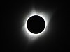

coincidence

Definition: A coincidence is a remarkable concurrence of events or circumstances that have no apparent causal connection with one another. The perception of remarkable coincidences may lead to supernatural, occult, or paranormal claims, or it may lead to belief in fatalism, which is a doctrine that events will happen in the exact manner of a predetermined plan. In general, the perception of coincidence, for lack of more sophisticated explanations, can serve as a link to folk psychology and philosophy.From a statistical perspective, coincidences are inevitable and often less remarkable than they may appear intuitively. Usually, coincidences are chance events with underestimated probability. An example is the birthday problem, which shows that the probability of two persons having the same birthday already exceeds 50% in a group of only 23 persons.
Source: Wikipedia
Wikipedia Page
Wikidata Page